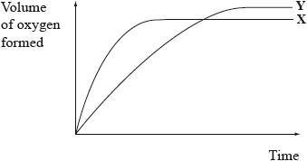

HL Paper 1
Sodium carbonate and hydrochloric acid react according to the equation below.
\[{\text{N}}{{\text{a}}_2}{\text{C}}{{\text{O}}_3}({\text{s)}} + 2{\text{HCl(aq)}} \to {\text{C}}{{\text{O}}_2}({\text{g)}} + 2{\text{NaCl(aq)}} + {{\text{H}}_2}{\text{O(l)}}\]
Which conditions will produce the fastest initial rate with 2.0 g of powdered sodium carbonate?
A. \({\text{100 c}}{{\text{m}}^{\text{3}}}\) of \({\text{1.0 mol}}\,{\text{d}}{{\text{m}}^{ - 3}}\) hydrochloric acid at 323 K
B. \({\text{50 c}}{{\text{m}}^{\text{3}}}\) of \({\text{2.0 mol}}\,{\text{d}}{{\text{m}}^{ - 3}}\) hydrochloric acid at 323 K
C. \({\text{100 c}}{{\text{m}}^{\text{3}}}\) of \({\text{1.0 mol}}\,{\text{d}}{{\text{m}}^{ - 3}}\) hydrochloric acid at 348 K
D. \({\text{50 c}}{{\text{m}}^{\text{3}}}\) of \({\text{2.0 mol}}\,{\text{d}}{{\text{m}}^{ - 3}}\) hydrochloric acid at 348 K
Curve X on the graph below shows the volume of oxygen formed during the catalytic decomposition of a \({\text{1.0 mol}}\,{\text{d}}{{\text{m}}^{ - 3}}\) solution of hydrogen peroxide.
\[{\text{2}}{{\text{H}}_2}{{\text{O}}_2}{\text{(aq)}} \to {{\text{O}}_2}{\text{(g)}} + {\text{2}}{{\text{H}}_2}{\text{O(l)}}\]

Which change would produce the curve Y?
A. Adding water
B. Adding some 0.1 mol dm–3 hydrogen peroxide solution
C. Using a different catalyst
D. Lowering the temperature
The diagram below shows the energy changes for a reaction with and without a catalyst. Which symbols represent the activation energy, \({E_{\text{a}}}\), and the enthalpy change, \(\Delta H\), for the reaction with a catalyst?


Which statements explain why a catalyst is used in the Contact process (shown below)?
\[{\text{S}}{{\text{O}}_2}{\text{(g)}} + \frac{1}{2}{{\text{O}}_2}{\text{(g)}} \rightleftharpoons {\text{S}}{{\text{O}}_3}{\text{(g)}}\]
I. A catalyst lowers the activation energy.
II. A catalyst moves the position of equilibrium towards the product.
III. A catalyst allows the same rate to be achieved at a lower temperature.
A. I and II only
B. I and III only
C. II and III only
D. I, II and III
Which pair of graphs shows a decomposition reaction of \(X\) that obeys first-order kinetics?